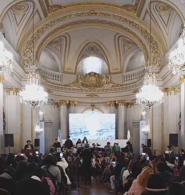
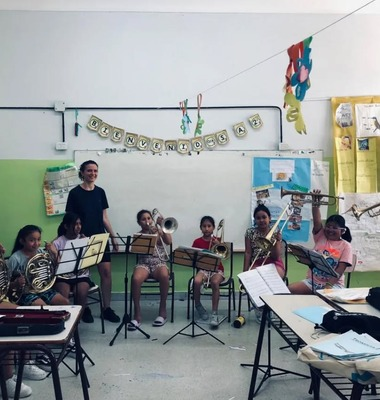
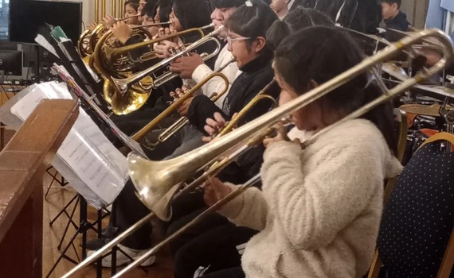
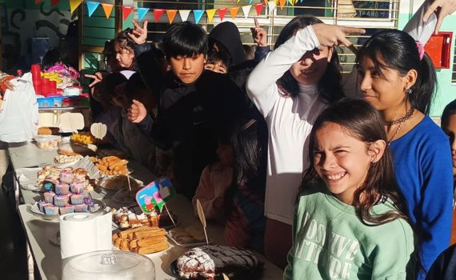

Concierto Legislatura porteña
Detalles del concierto

Concierto Escuela N6 DE 20
Detalles del concierto

Ensayos
Detalles de los ensayos


Videos de conciertos
Mira a nuestros musicos en vivo

Videos de eventos
Mira nuestros festejos y eventos